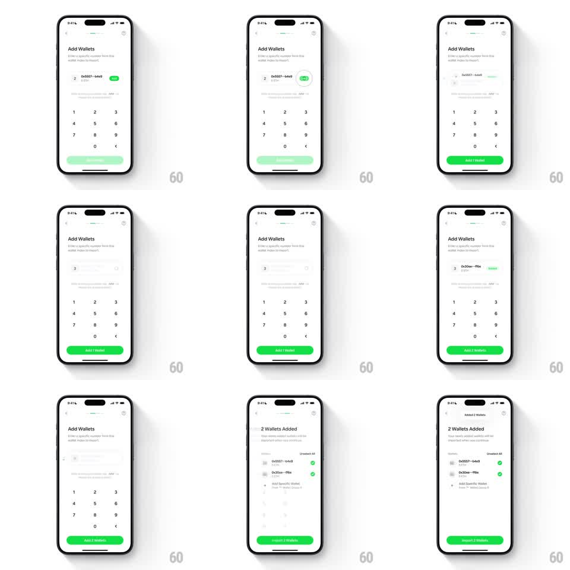

Media
Frame-by-frame

Rebuild this interaction 1:1: Family's add-wallet flow - on the "Add Wallets" screen with a numeric keypad, entering wallet indices morphs the CTA's text ("Add 1 Wallet" -> "Add 2 Wallets") with a springy character swap, a shimmer sweep marks the loading state, and the flow transitions to a "2 Wallets Added" summary with wallet rows and an "Import 2 Wallets" button.

Rebuild this interaction 1:1: Family's add-wallet flow - on the "Add Wallets" screen with a numeric keypad, entering wallet indices morphs the CTA's text ("Add 1 Wallet" -> "Add 2 Wallets") with a springy character swap, a shimmer sweep marks the loading state, and the flow transitions to a "2 Wallets Added" summary with wallet rows and an "Import 2 Wallets" button.
## Integration
Integration: stack-agnostic spec - springs given as stiffness/damping, timed motions as duration + curve; map every value to your framework and animation library of choice.
## Scene
Light "Add Wallets" screen: header, subcopy "Enter a specific number from this wallet index to import", an input row showing the derived address ("0x5557...b4e9") with a green "ETH" tag, and a numeric keypad (1-9, 0, delete). The green CTA at the bottom updates its count. Final screen: "2 Wallets Added" with address rows (0x5557...b4e9, 0x30ee...ff6e, each with checkmark), "Unselect All", "Add Specific Wallet", and a green "Import 2 Wallets" button.
## Motion spec
Pattern: keypad-driven CTA text transform with shimmer loading.
- Each keypad tap: the digit enters the input with a pop (scale 1.2 -> 1, 150ms), the derived address row shimmers (shine sweep left to right, 500ms) and resolves to the new address.
- The CTA text transforms: the count word slides up and out (translateY -8pt, opacity 0, 150ms) as the new count slides in from below (spring ~340/16); the button width eases to fit (200ms).
- Adding a second wallet: a new input row pushes in below (translateY 12pt -> 0, spring ~300/18), the CTA morphing to "Add 2 Wallets".
- Transition to the summary: the keypad slides down (250ms), the summary rows stagger in (80ms apart), each checkmark drawing on (stroke 200ms).
- "Import 2 Wallets" pulses once on arrival (scale 1 -> 1.03 -> 1, 300ms).
## Calibration
- The CTA text transform is the signature - a vertical slot-machine swap, not a crossfade.
- The address shimmer reads as derivation progress, not a skeleton loader.
## Reduced motion
Text swaps and row inserts crossfade (200ms); no shimmer.
## Don't miss
- The keypad's delete key removes the last digit with the same pop in reverse.
- The green CTA is disabled (50% opacity) until at least one valid index is entered.